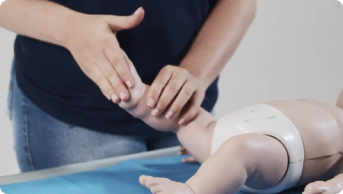
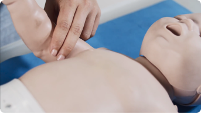
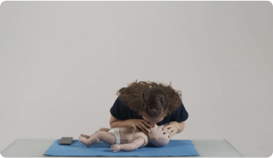
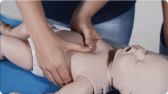

Suporte Básico à Vida em bebês(BLS lactente)

Avaliar a segurança do local
Cheque a segurança da cena. O local deve ser seguro para o socorrista e para a vítima.

Testar se a vítima responde
Chame pela vítima e dê tapas no pé do bebê, verifique se há resposta.


Chamar ajuda do serviço de emergência
Caso não haja resposta, você deve acionar o SAMU (ligar 192) e peça uma ambulância.

Checar os sinais vitais
Checar respiração e pulso. Observar se o tórax do lactente se eleva e retorna a posição inicial e palpar o pulso da artéria braquial.


Se pulso presente e respiração ausente
Iniciar as ventilações de resgate na frequência de uma ventilação a cada 2 ou 3 segundos. Reavaliar o pulso a cada 2 minutos. Se presente, continuar as ventilações de resgate; se ausente, iniciar a RCP.


Se pulso ausente
Se pulso ausente ou frequência cardíaca menor que 60 batimentos/minuto com sinais de perfusão deficiente (palidez, cianose, extremidades frias e diminuição da consciência), iniciar a RCP.

Atenção!
Deve-se abrir a via aérea. As duas técnicas para abertura de via aérea em lactentes são a elevação do queixo e a anteriorização da mandíbula. Caso exista suspeita de lesão cervical, realizar apenas a anteriorização da mandíbula.
Conceitos importantes para fixar na RCP de lactentes
Na presença de apenas um socorrista, realizar as compressões-ventilações na relação 30:2. Na presença de dois socorristas, a relação deve ser de 15:2.
Assim como em adultos, a frequência das compressões deve ser de 100 a 120 compressões por minuto.
Em bebês, deve-se comprimir um terço do diâmetro anteroposterior do tórax, o que equivale a aproximadamente 4 cm.
Permitir o retorno completo do tórax à posição inicial entre as compressões.
Minimizar ao máximo as interrupções. Menor tempo de interrupção acarreta em melhores resultados.
Caso haja somente um socorrista, deve ser usada a técnica dos dois dedos. Em caso de dois socorristas disponíveis, é preferível a técnica dos dois polegares-mão.